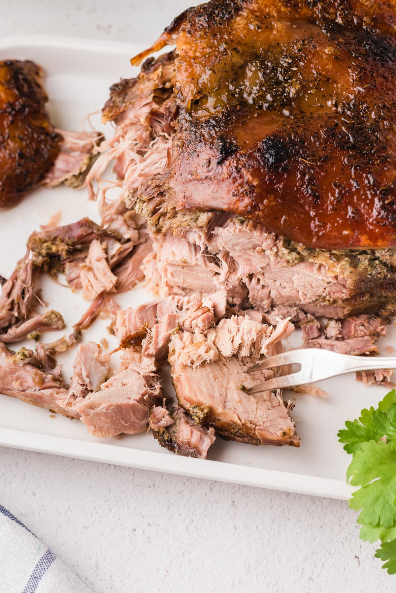

Pernil Dominicano

Description
This dish, although done differently, is no stranger to the United States. Roast pork
is almost self explanatory, here is one of our favorite ways to prepare it, especially
for Christmas Eve!
Ingredients
- Pork shoulder
- Cilantro
- Garlic
- Oregano
- Cumin
- Ground black pepper
- Lime juice or Orange juice marinade
- Apple cider vinegar
Steps
- In a food processor, pulse together cilantro, garlic, oregano, cumin, salt, pepper, vinegar and lime juice
- Poke holes into pork shoulder
- Rub the seasoning made in step 1 all over the meat and inside the recently poked holes
- Cover and place in the refrigerator. Let marinate overnight.
- Place the pork shoulder in the slow cooker and cover with water. (Enough to cover 3/4 of the meat)
- Cook on low for 8 hours
- Once tender, transfer the meat to to a roasting pan
- Roast in the oven at 450 degrees until brown and crispy for 1 hour
- Take out of oven and let rest for 15 minutes
- Shred meat using two forks
- Serve with some moro for a great meal
Buen Provecho! (Enjoy your meal!)